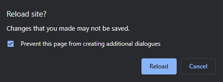

| Title | |
|---|---|
| Date | |
| Appearance | |
| Verbal behaviour and interactions | |
| Physical behaviour and gestures | |
| Personal space | |
| Human traffic | |
| People who stand out |

Welcome to ObserveIt
First steps in observational research methods
First steps in observational research methods
Qualitiative research methods can help you to gain in-depth understanding of the society you find yourself in. There is so much around us worth of our attention. This can be very overwhelming, especially if you are new to this form of inquiry. This tool is designed to help you to take your first steps in generating observational data which you can then take and work with further in a way that makes sense to you. You may use a spreadsheet or a word processing programme, or, if you or your institution have access to it, you may use a type of specialised qualitative research software, such as NVivo, Dedoose, or Atlas.ti.
More information on what you need or should pay attention to can be found in the accompanying book chapter - or in my class if you are working with me in person.
This is a companion app to the chapter by Bengsch, G. (2022). Observations. In Abigail Parrish & Ghazal Syed. A Quick Guide to Research Methods for Dissertations in Education. Bloomsburry.
Watch the video and fill in the form according to the notes in the chapter. You can also use the form to make notes on your own material and download it into a csv file to further work with in another piece of software. Keep in mind that "csv" stands for "comma separated value". That means, that you order your observations in the form through the use of commas: whenvever you use a comma, the following content will be stored in the next field in an application like Excel or NVivo, which will make it easier for you to deal with the large amount of observational data you are likely to create!
Much like in real life, you can only store one mental picture (here: screenshot). Make sure that you right-click on them to save them to your computer for later before moving on to take the next picture - unlike in real life, you always have the option to pause the video, or to rewind!
The page will remind you to check whether you are ready to refresh the page or not. If a check box appears that wants to create additional dialogues, please tick it to prevent this behaviour:
Let's recap some aspects to pay attention to.

Consider how the individual fits into their physical surroundings. What marks them as part of a group? Think about their general appearance, their clothes and the setting they appear in.

Consider who iniitates conversations, how they progress, and don't forget how they end. Anything unexpected happening?

How do people use non-verbal communication channels to aid in the conversation? What do you notice about gestures?

How do people show that they belong together? How close - or far - are people standing?

Are there new actors joining the conversation? How are they integrated into the group? Is the space transient?

Are there any individuals that seem to be different in their behaviour, appearance or speech behaviour? How so?
While you are watching the video, you are likely to notice that it is very difficult to keep track of what you are observing, but it will get better the more you practice! Remember, your notes only need to make sense to yourself. Consider inventing your own shorthand when taking notes. When you are done with the video, read through your notes and expand on them before downloading them. You can also take this time to organise them better. Remember, commas will move observations to the next field under the same heading. Make use of this to organise your observations!
| Title | |
|---|---|
| Date | |
| Appearance | |
| Verbal behaviour and interactions | |
| Physical behaviour and gestures | |
| Personal space | |
| Human traffic | |
| People who stand out |
Use this area to note down anything you want to keep track of that does not have a category in the field notes. Consider including: